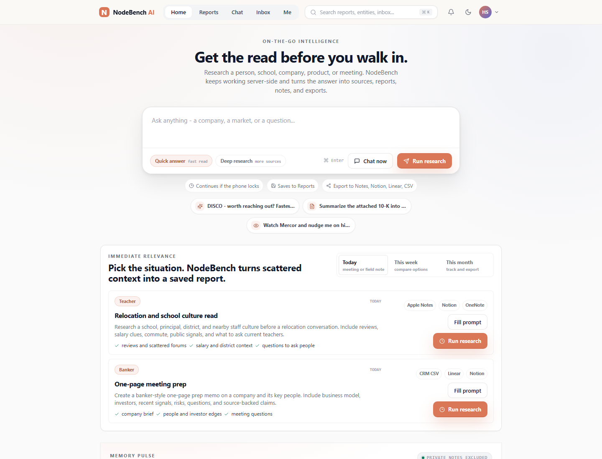
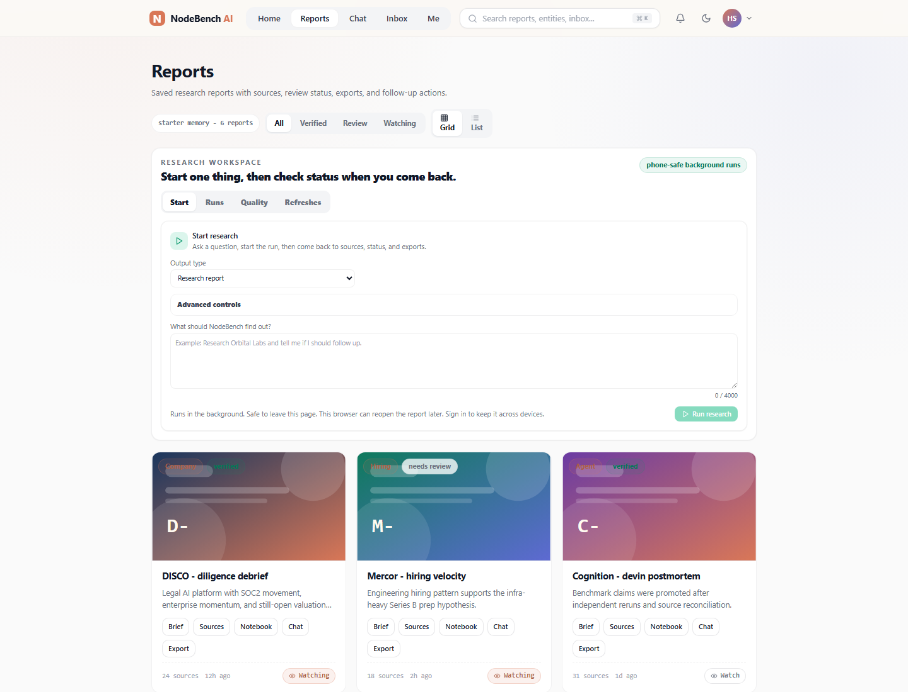
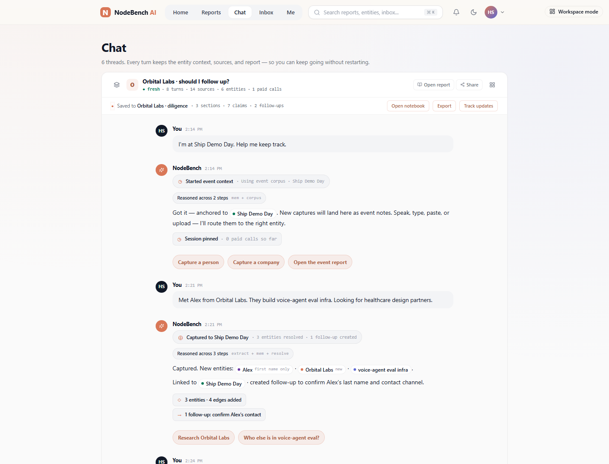
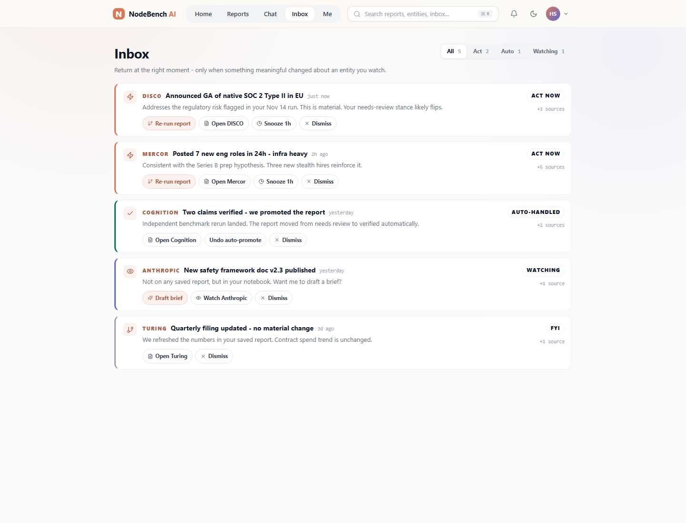
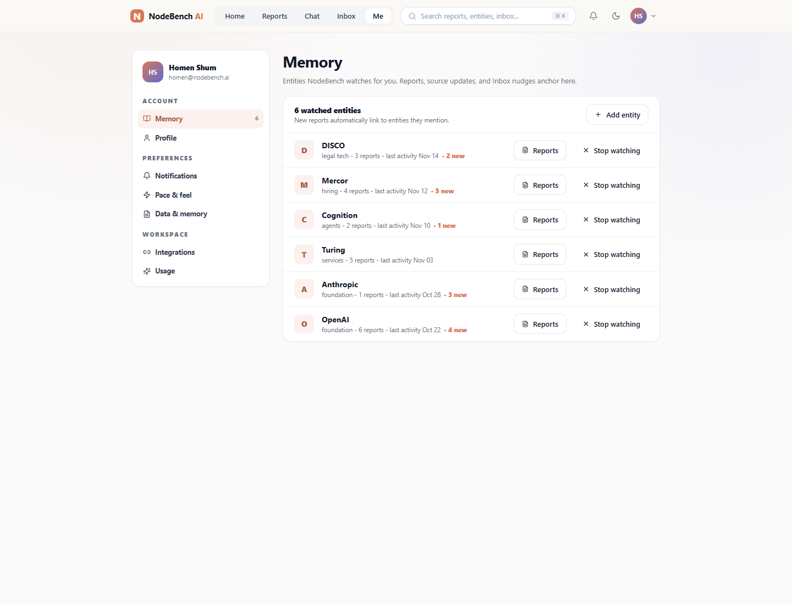
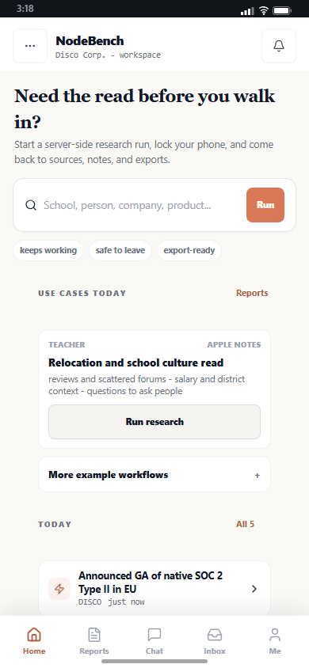
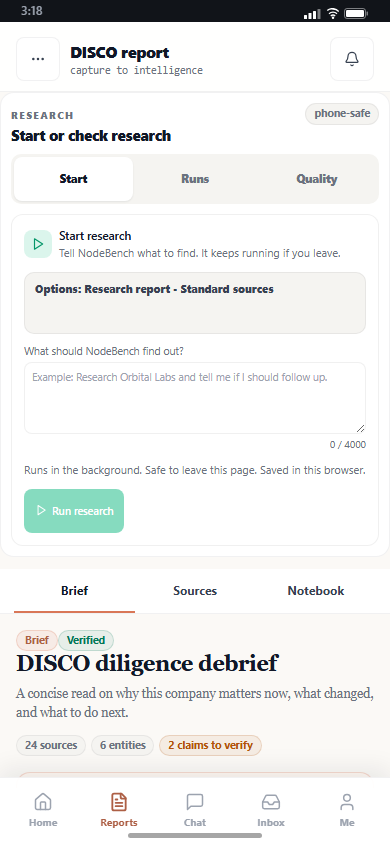
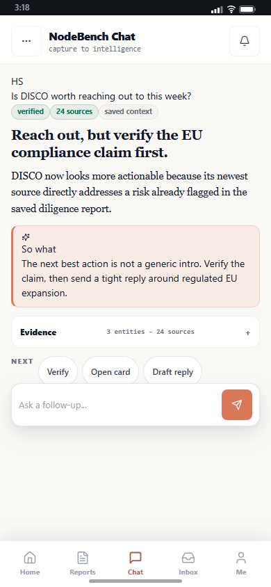
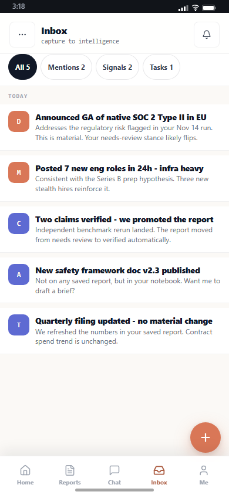
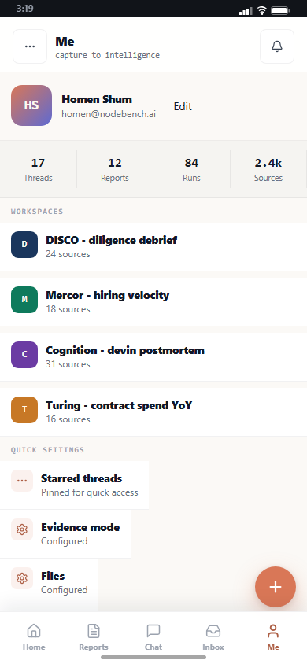

From dashboard cards to context graph workflow.
A high-fidelity change plan for turning first-run NodeBench into a product that starts with a real-world context, organizes every note under the right root, runs research in the background, and returns durable reports, claims, sources, notebooks, graph edges, and exports.
Everything starts from a context root.
NodeBench is not a flat chat log. The product should expose the typed memory graph directly: events, companies, people, products, claims, sources, notebooks, reports, and exports.
Workspace / User / Team
- Owner-scoped memory
- Private notes by default
- Shared public corpus only when explicit
- Search budget and approval policy
Context Roots
- Event: Ship Demo Day, school visit, conference
- Company: Orbital Labs, Mercury, Brex
- Person: Alex from Orbital Labs
- Product/topic: voice-agent eval infra
- Location/date: today, campus, relocation district
Durable Outputs
- Report and workspace
- Notebook sections
- Sources and claim audit
- Graph map and edge evidence
- CRM, Notes, Notion, Linear exports
Event Governs
- Notes, screenshots, voice memos
- People met and companies mentioned
- Field-note claims and follow-ups
- Post-event memo and event corpus
Company Governs
- People, products, investors
- Buyers, sellers, partners, competitors
- Reports, prior chats, event mentions
- Risks, public signals, watchlist refreshes
Person Governs
- Current and past affiliations
- Public footprint and identity evidence
- Collaborators and relationship context
- Claims made and meeting follow-ups
Product Governs
- Maker company and adjacent companies
- Buyers, sellers, channels, use cases
- Competitors and market cluster
- Evidence-backed product claims
Claims Attach To Everything
- Claim -> entity
- Claim -> source evidence
- Claim -> verification state
- Claim -> graph edge reason
Edges Must Explain Themselves
- Person works at company
- Company builds product
- Product competes with product
- Source supports or contradicts claim
Fresh local screenshots from the current app.
These images were captured from `http://127.0.0.1:4186` on 2026-05-02 after restarting the local frontend. They are evidence for what the plan is changing.
Current Home - desktop
current
Direction is right: first-impression prompts exist. Target should make the context root and persistence contract even more explicit.
Current Reports - desktop
current
Pipeline panels are present. Target should frame them as one job: start work, monitor run, inspect quality, export packet.
Current Chat - desktop
current
Chat is the universal ask surface. Target should make every answer show target root, source scope, and output destination.
Current Inbox - desktop
current
Inbox should become the one-list triage surface for captures, confirmations, alerts, and nudges.
Current Me - desktop
current
Me should stay focused on preferences, privacy, watched entities, and personal memory boundaries.
Mobile Home
current
Target should prioritize one query, one active context, one async status.
Mobile Reports
current
Mobile pipeline parity exists. Target should reduce it to capture -> run -> status -> open report.
Mobile Chat
current
Target should treat chat as a bottom-sheet tool over a context root, not a destination that loses the report.
Mobile Inbox
current
Target should compress this into capture review, confirmations, and follow-ups.
Mobile Me
current
Target should expose privacy, budgets, watched entities, and export defaults without crowding capture flows.
Proposed high-fidelity product states.
These are HTML mockups inside this planning artifact. They define the intended product shape before any React implementation work.
Target Home - immediate relevance
laptopGet the read before you walk in.
Ask about a school, principal, person, company, product, event, or meeting. NodeBench saves the work to a durable context root.
Active context
Relocation research -> Lincoln High -> school culture read
The first viewport should answer: what can I ask, where will it go, and can I leave while it runs?
Target Reports - async workbench
laptopStart research
One job. Pick context, depth, destination, and budget.
Running now
Quality gate
Claims: 18 total, 12 verified, 4 needs review, 2 unsupported.
Reports should expose the whole loop: run, status, quality, evidence, export.
Target mobile capture
phoneOne input. Routed automatically.
Detected
Saved to Ship Demo Day
Private note. 0 paid calls. Enrichment can run later from Reports.
Mobile should not make users choose tables or tabs before saving a field note.
Target entity card
phoneVoice-agent eval infra
Seen in Ship Demo Day. 3 field notes, 5 public sources, 2 follow-ups.
Claims
Edges
Alex -> Orbital Labs. Orbital Labs -> voice-agent eval. Healthcare buyers -> design partner target.
Entity cards should show claims, changes, contradictions, and edge evidence directly.
Target export handoff
phoneExport Ship Demo Day
Choose what leaves NodeBench. Private captures stay excluded unless explicitly selected.
Included
Exports need a human review gate and a visible private/public boundary.
Target Workspace - event root governs everything
laptopEvent root
April 30, 2026. 14 captures, 9 companies, 22 claims, 6 follow-ups.
Brief
Strongest follow-up: Orbital Labs because healthcare partner ask matches prior watchlist and claim evidence is specific enough to verify.
Graph edge evidence
Workspace is where the infinite-depth experience belongs: brief, cards, notebook, sources, chat, map.
Side-by-side product decisions.
These cards translate the mockups into implementation intent without asking the implementer to guess.
Home
- Lead with "what are you walking into?" examples.
- Show context root before memory metrics.
- Keep async save-to-Reports proof visible.
- Do not remove Convex-backed research run wiring.
Mobile
- Prioritize capture/query above browse.
- Surface active event or entity context as a pill.
- Show "saved to X" and paid-call posture.
- Do not let FABs cover primary report controls.
Reports
- Group controls around one workbench job.
- Make status and output destination scannable.
- Keep quality scorecard tied to claims/sources.
- Do not introduce fixture fallback in production paths.
Workspace
- Keep Workspace out of web nav.
- Open it from reports, sources, and graph nodes.
- Make event/company/person/product roots visible.
- Attach every graph edge to evidence.
Parity Studio workflow for this plan.
Parity Studio is a planning and decomposition lane here, not a hidden production runtime dependency. The goal is to turn each important NodeBench route into a canonical ui_kit and verify it with bounded checks.
Capture route
Open the live app route and capture rendered HTML/CSS plus screenshots.
Generate standalone
Normalize the route into a self-contained HTML artifact for decomposition.
Decompose
Emit `ui_kits/nodebench-*` components, tokens, manifest, QA and API plans.
Verify deterministic
Run boolean parity checks for text coverage, structure, budgets, and contracts.
Verify visual
Judge rendered output against screenshots with bounded verdicts, not fake scores.
Iterate and export
Patch scoped gaps, max two iterations, export a coding-agent-ready ui_kit zip.
What must be true before implementation is accepted.
The HTML plan is static, but the product changes it describes need browser proof, runtime proof, and no regression in the live pipeline flow.
Screenshot gate
- Desktop and mobile Home captured.
- Desktop and mobile Reports captured.
- Chat, Inbox, and Me captured.
- Images embedded in this HTML load without a dev server.
Runtime gate
- Pipeline launcher remains live-wired.
- Runs panel shows status and output links.
- Eval scorecard remains connected.
- No production fixture fallback for live flows.
Product gate
- First-time user can start from one real-world question.
- Mobile user sees save/status after capture.
- Laptop user can inspect sources, claims, notebooks, and exports.
- Private notes are visibly excluded from public/shared outputs.